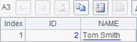
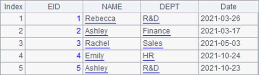
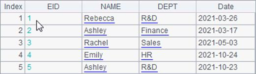

11.8.2 Defining a pseudo table
The first thing in metadata definition is
to define the pseudo table a future DQL query will use. The pseudo table should
be generated based on a composite table or a bin file. Click ¡°Add pseudo table¡±
icon  or select Edit->Add pseudo
table on the menu bar to add a pseudo table definition in metadata:
or select Edit->Add pseudo
table on the menu bar to add a pseudo table definition in metadata:

Click ¡°Select¡± button to select the data file from which the pseudo table will be generated. The variable name the pseudo table will use in the future DQL query can be changed as needed:

Here the original composite table file is emps.ctx. Defining a user-defined field for a pseudo table is similar to the pseudo table field definition explained in the previous section, except that we need to add one or more fields to the field list and modify the fields in column definition record. In the following window, we add enumerated pseudo field Dept and binary dimension pseudo fields IfMarried and IfLady:

In the DQL tool we set a user-defined field for the pseudo table through specific and detailed field names, like Enum dim value sequence for enum field defined with an expression and Binary dimension pseudo field for bits field defined with an expression.